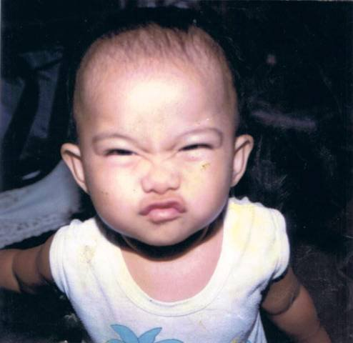
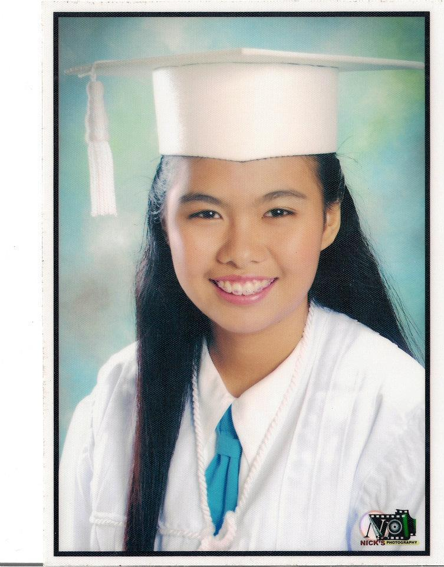

As a child, I was very shy. It was hard to make friends and do social stuff, but slowly, I gained confidence. My toys consists of those that were for boys and girls; "teks", trumpo,tamiya, yoyo and beyblade as boys' stuff while I also play with barbie dolls and stuff toys. I grew up with most of my playmates as boys but I have my only girl best friend (neighbor), too bad awkwardness grew between us through puberty. I also received many "battle scars" from stumbling and falling fromn bikes, stairs,etc. since I was kinda weak. Since I was (am) shy (I hardly talk duriing class), every year, I always received the Best in Conduct Award during kinder up to first 3 years of grade school. I also play with my younger brother, but our "bonding time" before was fighting over useless stuff, which was started by yours truly.
High school life was also awkward for me due to puberty, specifically pimples. It was the awkward bridge from being a kid to become an adult. I did not care about looks as much as my classmates would. I might even think that I'm like a wallflower during those years. Even though I have those insecurities, it didn't stop me from doing extra curricular activities and those that will definitely boost my confidence. I joined dance contests (once), and the choir, being elected as one of the class officers or leaders, and participating on school activities. I also gained many friends, and some of those became my best friends up until now. High school life was a very awkward phase, but it helped me realize that I need to grow not just physically, but in all aspects.
In the future, I want to be a successful business manager. Actually, I wanted the career path of my father. He finished BS Accountancy but he didn't passed the CPA Board Exam. This bump didn't hinder him. Since he is very hardworking, he commonly handles the position of the Financial Manager, and he was able to travel to different countries. At first, I thought it was just luck, but when it happened in different companies, I knew that it's not just luck. In the future, I want to be successful and be happy. I want to travel around the world while doing my job. I don't know how this will happen, but I'll work very hard to achieve it. I want to be happy and content with the presence of my loved ones. In the future, I want to be able to spend and treasure the time in this short life especially with my loved ones. Living the life without any regrets is the one I want to achieve the most.